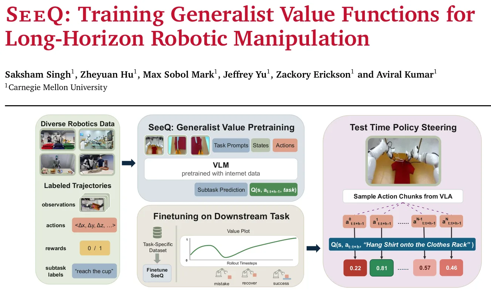
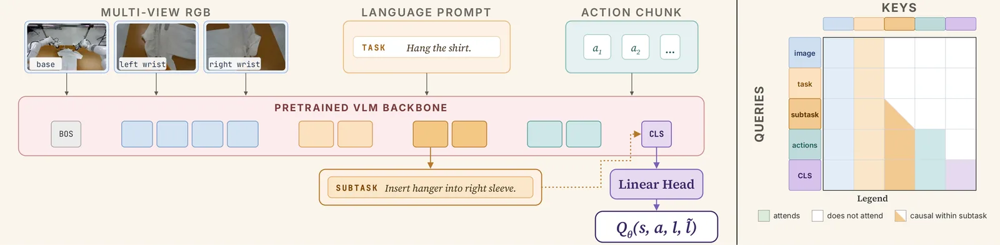
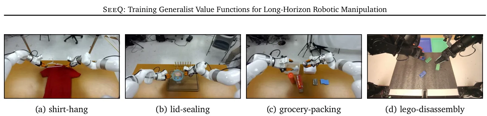
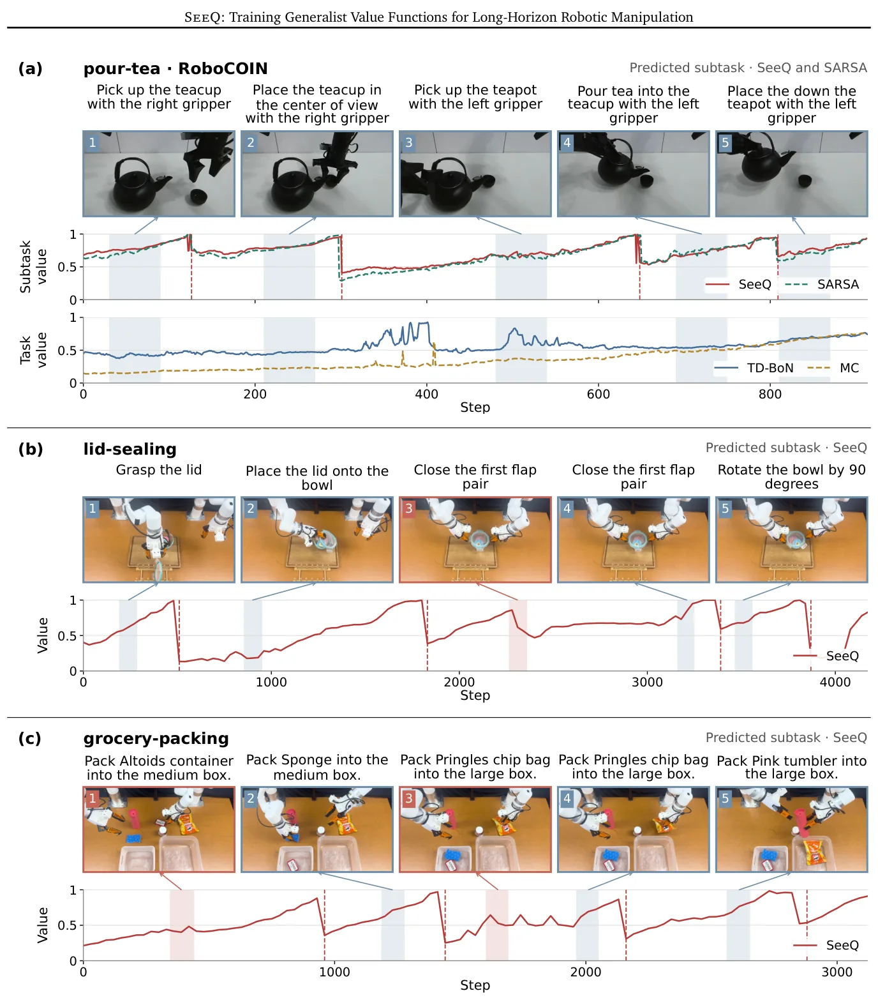

O problema: políticas generalistas quebram em tarefas longas
Políticas robóticas generalistas — modelos treinados em dados diversos que seguem instruções em linguagem natural — prometem robôs que transferem conhecimento entre objetos, cenários e plataformas. Mas essas políticas ainda são frágeis em tarefas complexas que se estendem por múltiplos estágios ou que exigem precisão e tentativas repetidas. Erros se acumulam ao longo do tempo, comportamentos de recuperação são raros nos datasets de demonstração, e a política imita indiscriminadamente ações boas e ruins.
Funções de valor oferecem um caminho: elas distinguem ações que fazem progresso daquelas que levam a falhas, permitindo guiar uma política base para comportamentos melhores. Trabalhos recentes mostraram que funções Q aprendidas podem melhorar substancialmente políticas de imitação no mundo real. O ideal seria treinar uma única função Q generalista que melhore políticas em muitas tarefas, aproveitando pré-treino em larga escala e dados robóticos diversos.
O obstáculo está no horizonte temporal. Métodos eficazes de aprendizado de valor, como temporal-difference (TD) learning, tornam-se instáveis em horizontes longos — exatamente o regime onde tarefas complexas apresentam os maiores desafios. Algumas abordagens descartam TD e regridem diretamente para retornos de Monte Carlo, mas sem TD a função de valor não consegue melhorar a política muito além da política que coletou os dados, limitando a utilidade do aprendizado de valor.
Este paper introduz SeeQ (Subtask-elicited Q-functions), uma abordagem que usa TD learning mas evita horizontes longos ao redefinir o alvo de predição: em vez de modelar sucesso esparso na tarefa completa, a função Q estima o retorno esperado para a subtarefa atualmente ativa. Isso transforma aprendizado de valor de horizonte longo em aprendizado de horizonte curto, no nível de subtarefas.

A intuição: tarefas longas são sequências de objetivos curtos
A ideia central explora uma estrutura comum em tarefas de manipulação: embora a tarefa especifique um resultado distante, o comportamento do robô a cada momento está tipicamente direcionado a um objetivo imediato. Tarefas multi-estágio progridem por marcos intermediários — agarrar um objeto antes de colocá-lo, por exemplo. Tarefas que exigem precisão ou deliberação podem demandar tentativas repetidas para completar um estágio, mas cada tentativa segue um objetivo de horizonte curto.
Em ambos os casos, avaliar progresso em direção à subtarefa ativa requer um horizonte de predição mais curto do que avaliar sucesso na tarefa completa. Se conseguirmos estimar valores para subtarefas em vez de para a tarefa inteira, encurtamos o horizonte e tornamos TD learning viável novamente.
Durante treinamento, anotações de subtarefa presentes em dados robóticos offline fornecem a decomposição e permitem aprender de datasets amplos e potencialmente subótimos. O desafio está em tempo de teste: não queremos exigir anotações humanas ou sistemas modulares de predição de subtarefa. A solução do SeeQ é modificar a arquitetura da função Q para prever autorregressivamente a subtarefa ativa em linguagem natural antes de estimar seu valor.

Como funciona: predição de subtarefa como prefixo para valor
O SeeQ é instanciado usando um backbone PaliGemma de 3B parâmetros, um vision-language model pré-treinado. A arquitetura recebe como entrada o estado atual (observações visuais), uma sequência de ações candidatas (action chunk), e a instrução da tarefa em linguagem natural. A saída é um valor Q escalar.
A modificação crucial está na estrutura interna. O modelo primeiro rola a subtarefa ativa no estado s em texto usando uma perda de next-token prediction. Somente depois de gerar essa descrição de subtarefa é que o modelo prediz o valor Q(s, a, l, ˜l), onde s é o estado, a é a ação, l é a instrução da tarefa e ˜l é a subtarefa predita. Essa arquitetura autoregressiva tem dois benefícios: elimina a necessidade de anotações de subtarefa em tempo de teste e melhora robustez próximo a transições de subtarefa.
O objetivo de treinamento combina duas perdas. A primeira é a perda de predição de subtarefa, calculada como cross-entropy sobre os tokens da subtarefa ground-truth. A segunda é a perda de valor Q, que usa TD learning com best-of-N backups: durante treinamento, o modelo avalia N chunks de ação candidatos e usa o valor máximo para o backup de Bellman. Essa escolha torna o backup mais robusto a ruído nos dados.
Crucialmente, o alvo de valor não é o retorno da tarefa completa, mas o retorno da subtarefa ativa. Se a subtarefa atual é 'alcançar a xícara', o valor Q estima a probabilidade de completar essa subtarefa específica, não de completar toda a tarefa de 'pendurar a camisa no cabide'. Isso encurta dramaticamente o horizonte de predição: de minutos para segundos.
A perda total é a soma ponderada das duas componentes: L = L_subtask + λ_Q * L_Q, onde λ_subtask = 0.1 no paper. Essa ponderação reflete que a predição de subtarefa é auxiliar, mas importante para alinhar as representações internas com as capacidades de geração de texto do VLM.
Treinamento em dois estágios: pré-treino generalista e fine-tuning
O SeeQ é treinado em dois estágios. Primeiro, pré-treino em dados diversos: o modelo é treinado no RoboCOIN, um dataset de manipulação robótica com anotações de subtarefa, restrito a embodiments bimanuais. Isso resulta em 131 tarefas e aproximadamente 40 mil episódios. Esse pré-treino generalista permite que o modelo aprenda priors visuais e motores transferíveis.
Segundo, fine-tuning na tarefa alvo: a função Q generalista resultante é ajustada em dados da tarefa específica de interesse. A quantidade de dados downstream varia entre tarefas — o paper não especifica números exatos, mas os experimentos usam entre 97 e 473 episódios por tarefa. A política base também é ajustada nos mesmos dados da tarefa alvo.
Durante treinamento e inferência, o método usa N=8 chunks de ação candidatos tanto para backups TD-BoN quanto para steering best-of-N da política. A política base é π0.5, uma política de difusão treinada por imitação. Todos os experimentos rodam a 60 Hz em robôs reais.
Experimentos: quatro tarefas bimanuais de manipulação no mundo real
Os autores avaliam em quatro tarefas reais de manipulação bimanual, cada uma durando de 1 a 3 minutos e testando coordenação, precisão e raciocínio sobre múltiplos estágios. Três tarefas usam plataforma xArm-7 bimanual com braços de 7 graus de liberdade; uma usa plataforma YAM bimanual.
Tarefa 1, shirt-hang (386 episódios): remover um cabide de uma barra, inseri-lo em ambas as mangas de uma camiseta e pendurar a camisa de volta na barra. Exige coordenação bimanual e posicionamento preciso para guiar o cabide em cada manga.
Tarefa 2, lid-sealing (447 episódios): pegar a tampa de um recipiente de armazenamento de alimentos, colocá-la no recipiente e fechar todas as quatro abas de travamento. Exige alinhamento preciso entre tampa e borda para vedação adequada.
Tarefa 3, grocery-packing (473 episódios): embalar itens de supermercado deformáveis de formas e tamanhos variados em caixas. Exige agarrar objetos diversos, seguir instruções que variam entre episódios (tanto o conjunto de objetos quanto as caixas atribuídas mudam), e coordenação bimanual para passar objetos de um braço para outro quando o objeto está do lado oposto à caixa alvo.
Tarefa 4, lego-disassembly (97 episódios de treino): separar blocos Lego montados de cores diferentes e colocar cada bloco na bandeja da cor correspondente. Similar a grocery-packing, a instrução varia entre episódios. Exige raciocinar sobre orientação para segurar os blocos e como separá-los, além de coordenação bimanual para handoffs.

Resultados: SeeQ dobra taxa de sucesso em múltiplas tarefas
A tabela principal compara a política base sozinha contra a mesma política guiada por SeeQ via best-of-8 action selection, em 24 tentativas por tarefa. Em shirt-hang, a base acerta 10/24 (42%) e SeeQ melhora para 22/24 (92%). Em lid-sealing, de 10/24 (42%) para 15/24 (62%). Em grocery-packing, de 9/24 (38%) para 17/24 (71%). Em lego-disassembly, de 5/24 (21%) para 10/24 (42%).
O ganho é consistente mas varia em magnitude. Em shirt-hang, SeeQ mais que dobra a taxa de sucesso. Em lego-disassembly, também dobra, mas a taxa absoluta permanece baixa (42%), sugerindo que a tarefa é intrinsecamente difícil ou que 97 episódios de treino não são suficientes para fine-tuning robusto.
Os autores observam que a função Q é especialmente útil para selecionar a melhor ação em estados que exigem precisão e para prevenir que erros se acumulem ao longo de rollouts mais longos. Em outras palavras, SeeQ não apenas melhora desempenho médio, mas aumenta robustez: a política comete menos erros irreversíveis.
Análise qualitativa: o que a função Q aprendeu
Os autores visualizam predições de valor ao longo de trajetórias para entender o comportamento interno do SeeQ. Em uma trajetória de RoboCOIN held-out, TD no nível de tarefa fornece valores baixos e ruidosos, falhando em capturar progresso. Monte Carlo no nível de tarefa produz valores ligeiramente mais informativos mas ainda ruidosos. SARSA no nível de subtarefa captura algum progresso mas é menos suave.
SeeQ, em contraste, produz valores que aumentam monotonicamente à medida que o robô progride em cada subtarefa e caem abruptamente em transições de subtarefa, refletindo corretamente que uma nova subtarefa começa. Esse padrão confirma que o modelo aprendeu a estrutura de subtarefas e consegue estimar valores de horizonte curto de forma confiável.
Em avaliações reais de SeeQ, os gráficos de valor mostram a função Q escolhendo entre chunks de ação candidatos. Quando o robô comete um erro — por exemplo, posiciona mal o cabide — o valor cai. Quando a política base propõe uma ação de recuperação bem-sucedida, o valor sobe novamente. Isso demonstra que SeeQ não apenas avalia progresso nominal, mas distingue tentativas que recuperam de erros daquelas que perpetuam falhas.

Ablations: o que importa no design do SeeQ
Os autores conduzem ablations para isolar contribuições de componentes individuais. Primeiro, importância do pré-treino generalista: treinar SeeQ do zero apenas em dados da tarefa alvo reduz desempenho substancialmente. Em shirt-hang, sem pré-treino a taxa cai de 22/24 para valores não especificados no trecho fornecido, mas o texto indica que pré-treino é crítico.
Segundo, supervisão de subtarefa: remover a perda de predição de subtarefa (λ_subtask = 0) degrada desempenho. A supervisão de linguagem natural alinha representações internas com o VLM pré-treinado e melhora robustez próximo a transições de subtarefa. Decodificar a subtarefa predita em tempo de teste também é importante: usar ground-truth em vez da predição do modelo piora resultados, sugerindo que o modelo aprende representações internas melhores quando forçado a gerar subtarefas.
Terceiro, qualidade dos dados de treinamento: os autores comparam fine-tuning em dados coletados por Reinforcement Learning from AI Critique (RaC) versus teleoperação humana. RaC é um método que usa crítica de modelos de linguagem para melhorar iterativamente a política. Dados RaC, apesar de subótimos em alguns aspectos, permitem que SeeQ aprenda funções Q úteis, demonstrando que o método tolera dados de qualidade variada.
Limitações e o que o paper não mostra
O paper avalia em apenas quatro tarefas, todas bimanuais e todas de manipulação de objetos rígidos ou semi-rígidos. Não está claro como SeeQ se comporta em tarefas de locomoção, manipulação de objetos altamente deformáveis, ou cenários com dinâmica de contato complexa. O número de episódios de treino varia (97 a 473), mas não há análise sistemática de quantos dados são necessários para convergência.
Todos os experimentos usam N=8 candidatos para best-of-N. Não sabemos como desempenho escala com N maior ou menor, nem o custo computacional de avaliar múltiplos candidatos em tempo real. O paper não reporta latências de inferência, o que é crítico para deployment em 60 Hz.
A decomposição em subtarefas depende de anotações humanas durante treinamento. Embora o modelo aprenda a prever subtarefas em tempo de teste, a qualidade dessa predição depende da qualidade e consistência das anotações no dataset de pré-treino. Se anotadores humanos discordam sobre fronteiras de subtarefas, o modelo pode aprender decomposições ambíguas.
O paper não compara com métodos de aprendizado hierárquico que aprendem decomposições de subtarefa de forma não supervisionada, como options ou skills descobertos automaticamente. Também não explora se SeeQ pode generalizar para tarefas completamente novas sem fine-tuning — todos os experimentos incluem fine-tuning na tarefa alvo.
Finalmente, o escopo é restrito a embodiments bimanuais. Não está claro se a abordagem transfere para robôs móveis, quadrúpedes ou manipuladores de braço único. O pré-treino em RoboCOIN usa apenas embodiments bimanuais, o que pode limitar a generalização.
Por que isso importa
SeeQ mostra que é possível treinar funções de valor generalistas que melhoram políticas robóticas em tarefas de horizonte longo, desde que reformulemos o problema. Em vez de aprender valores esparsos sobre minutos de execução, aprendemos valores densos sobre segundos de subtarefas. Isso torna TD learning viável novamente e permite que a função Q melhore a política além dos dados de treinamento.
A contribuição arquitetural — prever subtarefa antes de prever valor — é elegante e prática. Elimina a necessidade de sistemas modulares de predição de subtarefa em tempo de teste e alinha o aprendizado de valor com as capacidades de geração de texto de VLMs pré-treinados. Isso abre caminho para funções de valor que raciocinam explicitamente sobre estrutura de tarefa em linguagem natural.
Os resultados reais são encorajadores: dobrar taxa de sucesso em múltiplas tarefas complexas é um ganho substancial. Mas o método ainda exige fine-tuning por tarefa e anotações de subtarefa durante pré-treino. O próximo passo seria aprender decomposições de subtarefa de forma não supervisionada ou generalizar zero-shot para tarefas novas. Por enquanto, SeeQ demonstra que funções Q generalistas são viáveis se encurtarmos o horizonte de predição através de estrutura de subtarefa.
O que fica
- SeeQ aprende valores de subtarefas curtas em vez de tarefas completas, encurtando o horizonte de predição e tornando TD learning eficaz em manipulação de horizonte longo.
- A arquitetura prediz a subtarefa ativa em linguagem natural antes de estimar valor, eliminando necessidade de anotações em tempo de teste e alinhando com VLMs pré-treinados.
- Em quatro tarefas bimanuais reais, SeeQ dobra taxa de sucesso via best-of-N steering, de 21-42% para 42-92%, mostrando que funções Q generalistas melhoram políticas robóticas.
- Limitações: depende de anotações de subtarefa no pré-treino, exige fine-tuning por tarefa, e foi testado apenas em manipulação bimanual com 97-473 episódios por tarefa.
Paper original: SeeQ: Training Generalist Value Functions for Long-Horizon Robotic Manipulation
Comentários
Nenhum comentário ainda. Seja o primeiro.